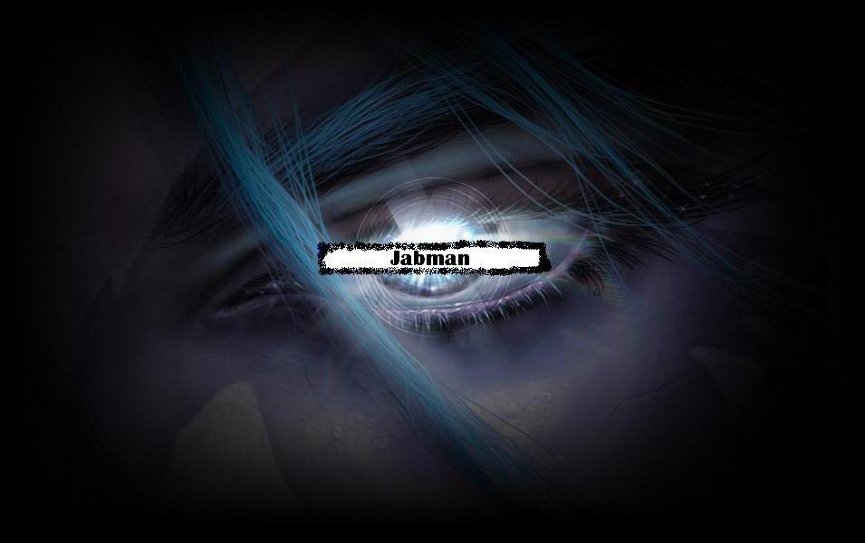

Forums galactiques > Poubelle publique de l'assemblée galactique > Poubelle automatique
| jabman  25/01 ETU 23:16 | bonjour a vous chere voisin galactique je fais appelle a vous pour vous demander de savoir les caractéristique requises pour pouvoir obtenir : un chantier spatial un complexe d'armement un laboratoire scienifique bref tous l'equipement de départ ... merci pour votre collaboration ps: de plus je voudrais également savoir de cb augmente notre leems chaque jour , pis les diamants é le reste ... merci encore |
js1boys 25/01 ETU 23:24 | ne me soustimez pas je suis pas comme les autres humain je déteste les humains l'attaque était enfaîte visait sur l'alita m'étant tromper j'ai pas pus l'arrêter mais lolita est mort ce commandant voulait votre perde je l'ai donc éliminer comme vous avec pu le voir toute mes excuses si vraiment vous essayer de m'attaquer j'ouvrirai le feu et je vous détruirais comme vous dites mais avant vous |
js1boys25/01 ETU 23:37 | c'est a toi te rendre et vite fait |
js1boys26/01 ETU 08:38 | Alors la ,je suis d'accord avec vous . Un gouvernement nous mettra encore plus dans le chaos juste pour une planete . Mais en meme temps celui qui l'aurait le gouvernement pourrait controler toute la galaxie comme un vrai gouvernement ,je pense pas ! je pense plutôt que le gouvernement est l'image representative de la galaxie . |
punk[ghost] 26/01 ETU 10:11 | bonjour je signe ce pacte comme je suis malade je peux le signer aujourd'hui car sinon je serai en cours. |
JooL 27/01 ETU 16:26 | Le Commandant Jool décida de rester dans la pénombre. Comment leur expliquer qu'un Parrain et un parainné pourraient se retrouver en conflit puisque dans des coalition différentes? Ha décidémment; ces débats de l'assemblée parfois tournaient au ridicule... |
CrazyFleutin 27/01 ETU 16:27  | Ce que vous ne venez pas de respecter commandant Zygot...;) Cordialement cdt CrazyFleutin... |
Cronos 27/01 ETU 18:05 | ( Dans cette galaxie je suis assez contente de la diersité des psedos . ) |
js1boys27/01 ETU 19:14 | alors la n0ne on va pas s'entendre si quelqu'un doit tuer les commandants c'est moi et que moi je te laisserai pas les tuers donc je te turai et continuerai ma tache |
Général_CSI 27/01 ETU 19:19 | En tant qu'ancien joueur d'ogame, j'ai eu connaissance avec des borg qui ont déclanchés une guerre galactique et qui ont péri ensuite. Si les borg veulent subir le même sort sur apocalyspsis... |
js1boys28/01 ETU 12:25 | moi je suis pour la dictacture ,nous faisons ce que nous voullons meme si le peuple n'est pas d'accord ! un peuple democratique a trop de liberté a mon coup c'est juste mon avis |
bibi 28/01 ETU 16:53 | pour que vus le renversiez sans vergogne apres!!!!! |
bibi28/01 ETU 16:54 | ouais ba moi je suis le gros demon en haut et je signerais que dalle pasque c'est moi le plus fort hahahahha |
Pytre28/01 ETU 17:07 | Mon cher Von Richthofen de la part d'un Ultrèmiste votre reponse me decois... En meme temps vous vous etes fais rayer de la galaxie d'origine tellement facilement, je comprend que vous vouliez changer... |
bibi28/01 ETU 17:29 | a votre avis ?.....en tout cas ce serai plutot démone! |
js1boys28/01 ETU 18:09 | a enfin un personnage digne de son nom pas comme vous tous pour bibi vive bibi vive bibi |
Jseb 29/01 ETU 15:55 | (Isaac Asimov, Fondation) |
Agarash 29/01 ETU 19:28 | Il faut tout d'abord éliminer les sous races les éspeces primitive ne doivent plus être tolérer il ont fait leurs temps qu'ils disparaissent je parle tout d'abord des amphibien ? espece a sang froid répugnant a mort a mort je parle également de différentes entité qui pronnent l'avénement d'un dieu saint et sacré a mort a mort il nous faut du sang pas de stupid dieu qui apporte paix et joie !!! éliminons toutes ces vérmine et que la race fiélonne et humaine dominent cette galaxie !! Agarash l'archidiable |
Agarash29/01 ETU 19:30 | D'ailleurs une petite annonce dans cette galaxie , on m'a usurper mon armure et mon fameux casque je recherche un bon forgerons si possible un disciple de méphistos merci cordialement |
Jseb29/01 ETU 20:47 | Je sais, j'avais oublié le mot. Et faites attention à Arioch. |
Forums galactiques > Poubelle publique de l'assemblée galactique > Poubelle automatique